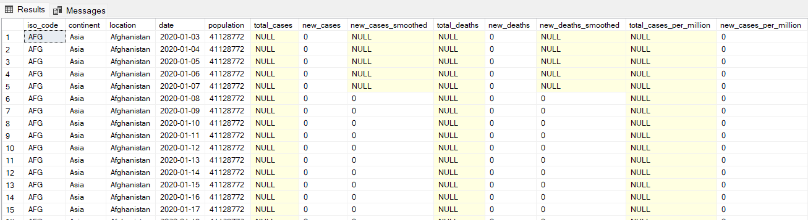
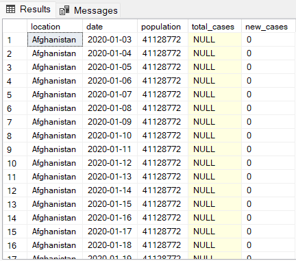
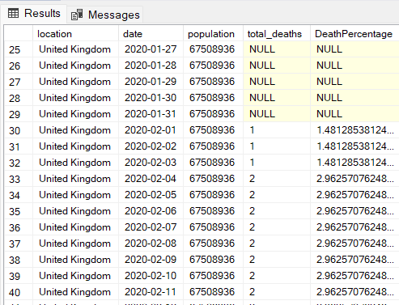
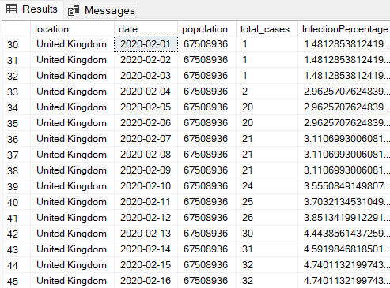
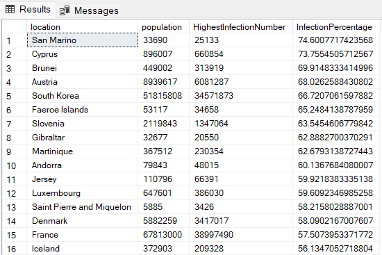
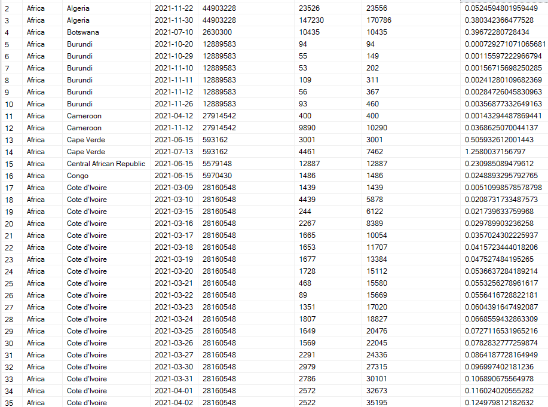

There are multiple instances of code through this showcase. Each iteration of the code will be broken down and digested. To start I used SQL Server 2022 to create a database on my device. Secondly, I installed SQL Server Management Studio to access the database and manipulate the data. The dataset used is COVID-19 data obtained from https://ourworldindata.org/coronavirus. This dataset was then imported onto my database in two digestable tables, CovidDeaths and Covid Vaccinations. Once I had manipulated the data I created a Tableau dashboard, found here: My Tableau Dashboard. I will not go into detail about how I did the dashboard creation and this is relativley self-explanatory.
SELECT *
FROM PortfolioProject..CovidDeaths
ORDER BY 3,4
For the first step in this code I had to select all columns from the 'CovidDeaths' table, and re-order the columns to have the country in the first column. I will explain each step of the code below:
SELECT *: This part of the code is specifying the columns to be retrieved in the result set. The asterisk (*) is a wildcard character that represents all columns. So, the query is selecting all columns from the "CovidDeaths" table.
FROM portfolioProject...CovidDeaths: This part of the code specifies the source of the data. It indicates that the data is retrieved from the "CovidDeaths" table, which is located in the "PortfolioProject" schema. The ".." notation is used to separate the schema and table names.
ORDER BY 3,4: This part of the code is used to sort the result set. The numbers 3 and 4 refer to the positions of columns in the result set (based on the order in which they appear in the SELECT statement). In SQL, the ORDER BY clause is used to sort the result set based on one or more columns. In this case, the result set will be sorted primarily by the third column and then by the fourth column.
Once the code is run, the following output is given (this is a smal glimpse of the data):

SELECT location, date, population, total_cases, new_cases
FROM PortfolioProject..CovidDeaths
ORDER BY 1,2
The second step is investigating the data more granularly by investigating specific columns. Note the only difference in this code is the addition of specific column names and the ordering of the columns from 3,4 to 1,2.
Once run the following data is given:

SELECT location, date, population, total_deaths, (total_deaths/population)*100 AS DeathPercentage
FROM PortfolioProject..CovidDeaths
WHERE location like '%kingdom%'
ORDER BY 1,2
SELECT location, date, population, total_deaths, (total_deaths/population)*100 AS DeathPercentage: For the first part of this code we first select the relevant columns, as we did above. However, the difference in this code is that we are creating a new column based off of the calculations of other columns. For example, above we are dividing the total_deaths column by the population column and outputting that data into a new column DeathPercentage. Note, this does not permenantly create a new column, but rather allows us to view data calculations quickly without altering the table.
FROM PortfolioProject..CovidDeaths: Same as above code examples, chosing which table the data needs to come from.
WHERE location like '%kingdom%': In the previous coded examples we have been investigating all data. However, for this example we are only concerned with data from the United Kingdom. The WHERE clause allows us to investigate data in a specific column and give us the output for all columns we have selected above. The LIKE clause in this part of the code allows us to air on the side of caution and capture anything in the location column and give us that output.
ORDER BY 1,2: As in the above codes, this allows us to order the data. In this instance I have ordered by location, date, etc.
Running the above code gives us this output (I have scrolled down further in the table as when there were no deaths, the percentage was NULL):

SELECT location, date, population, total_cases, (total_cases/population)*100 AS InfectionPercentage
FROM PortfolioProject..CovidDeaths
WHERE location like '%kingdom%'
ORDER BY 1,2
This code is very similar to the one above. It does however give us the percentage of the population that were infected with COVID, through the timeline by dividing the total_cases column by the population column and giving us an output in the InfectionPercentage column.
Output should be like below:

SELECT location, population, MAX(total_cases) AS HighestInfectionNumber, MAX((total_cases/population))*100 AS InfectionPercentage
FROM PortfolioProject..CovidDeaths
GROUP BY location, population
ORDER BY InfectionPercentage DESC
SELECT location, population, MAX(total_cases) AS HighestInfectionNumber, MAX((total_cases/population))*100 AS InfectionPercentage: As with all the above codes, we have selected out columns. However, this time we want to investigate the highest number in the total_cases field and save the output as HighestInfectionNumber. We then want to find the maximum value of division of the total_cases column and the population column to save to our InfectionPercentage column.
GROUP BY location, population: I have skipped the FROM clause as I have explained numerous times above but will jump straight in to the GROUP BY clause. This clause groups the result set by the location and population columns. The MAX() aggregate functions in the SELECT clause operate on each group of rows based on these columns.
ORDER BY InfectionPercentage DESC: Finally, we want to ORDER our columns. This time though we want to order our columns according to the value of the InfectionPercentage column, in descending order. This will allow us to view the countries with the highest percentage of infections.
Output of the code should be as below:

WITH PopulationOverVaccinations (continent, location, date, population, new_vaccinations, Rolling_Total_Vaccinations)
AS
(
SELECT dea.continent, dea.location, dea.date, dea.population, vac.new_vaccinations, SUM(vac.new_vaccinations) OVER (PARTITION BY dea.location ORDER BY
dea.location, dea.DATE) AS Rolling_Total_Vaccinations
FROM PortfolioProject..CovidDeaths dea
JOIN PortfolioProject..CovidVaccinations vac
on CAST(dea.location AS nvarchar) = CAST(vac.location AS nvarchar)
AND dea.date = vac.date
WHERE dea.continent IS NOT NULL
)
SELECT *, (Rolling_Total_Vaccinations/population)*100
FROM PopulationOverVaccinations
WHERE new_vaccinations IS NOT NULL
ORDER BY 1,2,3
This is by far the most complicated part of this showcase. In the above code the SQL query creates a Common Table Expression (PopulationOverVaccinations) that combines data from the "CovidDeaths" and "CovidVaccinations" tables. It calculates the rolling total of vaccinations for each location and then calculates the vaccination percentage. The final result set includes all columns from the CTE, along with the calculated vaccination percentage.
This section begins with a Common Table Expression (CTE) defined by the WITH keyword. The CTE is named PopulationOverVaccinations and has columns continent, location, date, population, new_vaccinations, and Rolling_Total_Vaccinations.
The CTE is created by selecting data from two tables: "CovidDeaths" (dea) and "CovidVaccinations" (vac). The join condition involves matching the location and date columns.
The SUM(vac.new_vaccinations) OVER (PARTITION BY dea.location ORDER BY dea.location, dea.DATE) expression calculates the rolling total of new vaccinations for each location. It uses the SUM window function over the partition defined by dea.location and is ordered by dea.location and dea.DATE.
The WHERE clause filters out records where the continent in the "CovidDeaths" table is NULL.
The SELECT and FROM clauses at the bottom selects all columns from the PopulationOverVaccinations CTE (* denotes all columns) and adds a calculated column: (Rolling_Total_Vaccinations/population)*100. This column represents the vaccination percentage.
Finally, as there was a lot of NULL data (i.e. people were not vaccinated yet), I added in a WHERE new_vaccinations IS NOT NULL. This will then only show data where there are values. Also, we would like to ORDER BY continet, location, and then date.
Once run, the below output should be given:
